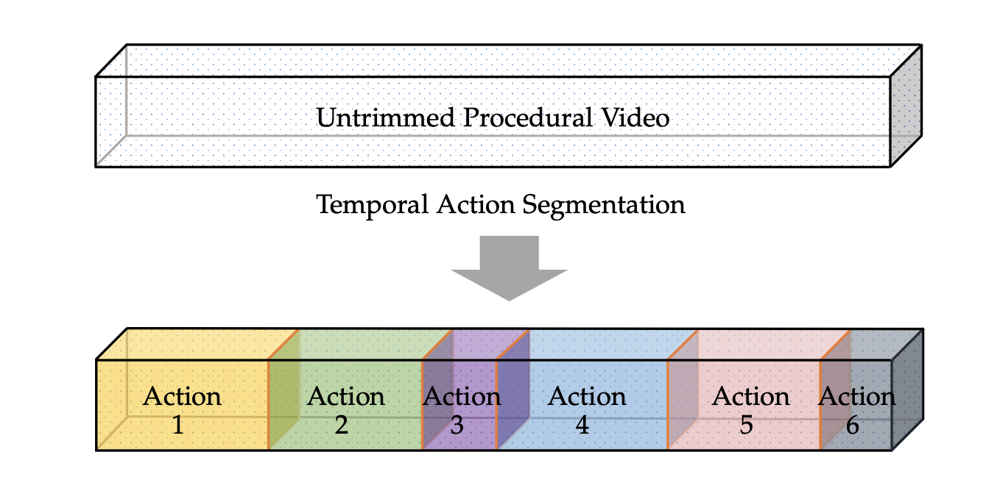

|  |
Guodong Ding 1, Fadime Sener 2 and Angela Yao1
1National University of Singapore, 2 Reality Labs, Meta
Temporal action segmentation from videos aims at the dense labeling of video frames with multiple action classes in minutes-long videos. Categorized as a long-range video understanding task, researchers have proposed an extended collection of methods and examined their performance using various benchmarks. Despite the rapid development of action segmentation techniques in recent years, there has been no systematic survey in such fields. To this end, in this survey, we analyse and summarize the main contributions and trends for this task. Specifically, we first examine the task definition, common benchmarks, types of supervision and popular evaluation measures. Furthermore, we systematically investigate two fundamental aspects of this topic, i.e., frame representation and temporal modeling, which are widely and extensively studied in the literature. We then comprehensively review existing temporal action segmentation works, each categorized by their form of supervision. Finally, we conclude our survey by highlighting and identifying several open topics for research. In addition, we supplement our survey with a curated list of temporal action segmentation resources, which is available at here.
Files: [pdf]
Resources: [GitHub]
Citation:
@article{ding2022temporal,
title={Temporal Action Segmentation: An Analysis of Modern Technique},
author={Ding, Guodong and Sener Fadime and Yao, Angela},
journal={arXiv preprint arXiv:2210.10352},
year={2022}
}